Mathematical Foundations of Plumial
This document provides the mathematical foundations underlying the Plumial library’s approach to Collatz conjecture analysis. The framework transforms the discrete dynamics of Collatz sequences into algebraic operations on polynomial spaces, enabling systematic analysis of cycle structures and their properties.
Introduction: From Sequences to Polynomials
The Collatz conjecture studies sequences defined by simple rules:
If n is even: n → n/2
If n is odd: n → 3n + 1
While these operations appear elementary, they generate complex dynamics that have resisted mathematical analysis for decades. Plumial’s approach transforms this discrete problem into polynomial algebra, where powerful mathematical tools become available.
Key Insight: Rather than studying individual Collatz sequences, we can encode their binary path structure as polynomials and study the resulting algebraic relationships.
Chapter 1: p-values and Binary Path Encoding
Foundation: Separated Binary Representation
Every positive integer p can be uniquely written as:
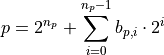
where:
np: The path length (position of most significant bit)
bp,i ∈ {0,1}: The ith bit in the path portion
2^{n_p}: The separated most significant bit
Example: For p = 133:
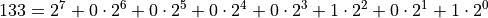
Binary: 10000101 → MSB: 1, Path: 0000101
Bit Counting and Path Structure
From the path portion, we extract fundamental quantities:
op: Number of odd bits (number of 1s in path portion)
ep: Number of even bits (number of 0s in path portion)
np: Total path length = op + ep
These quantities are invariant under the p-cycle operations that define the cyclic structure.
Plumial Implementation:
p = P(133)
p.n() # 7 (path length)
p.o() # 2 (odd operations)
p.e() # 5 (even operations)
p.b() # '10000101' (full binary)
Chapter 2: From Binary Paths to Sigma Polynomials
The Ur-Cycle and Cyclic Structure
The ur-cycle is the fundamental cyclic permutation of the lower np bits of the p-value. This cyclic structure connects all subsequent polynomial encodings and provides the foundation for understanding Collatz dynamics through algebraic methods.
The Sigma Polynomial Construction
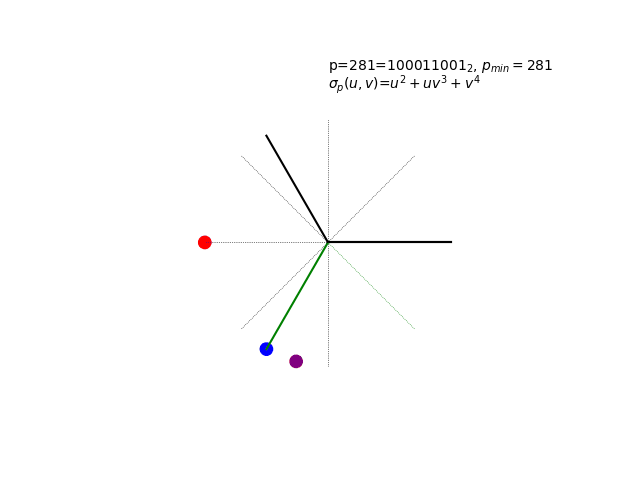{kind=link}
The sigma polynomial σp(u,v) in action for a very special p-value…
The sigma polynomial σp(u,v) encodes the binary path structure:
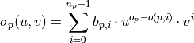
where o(p,i) counts the number of 1-bits from position 0 to position i.
Intuitive Structure: The exponents in each term u^i · v^j have clear meaning: - j: The bit position of the path bit - i: The index of this path bit among all path bits (counting odd bits)
This creates a natural correspondence between the binary structure and polynomial representation.
Key Properties:
Bijection: There’s a one-to-one correspondence between p-values and sigma polynomials
Reconstruction: p = 2^(n_p) + σp(1,2) recovers the original p-value
Structure Preservation: p-cycle operations correspond to polynomial transformations
Complete Encoding: The pair (np, σp) provides a complete algebraic encoding of the cyclic structure
Intuitive Exponents: Each term’s exponents directly encode bit position and path structure
Example: For P(21) with binary 10101:
Path portion:
0101op = 2, ep = 2, np = 4
Sigma polynomial: u + v²
Breaking down the exponents:
Term u¹ · v⁰ = u: 1st path bit (bit 0) has value 1, position 0
Term u⁰ · v² = v²: 2nd path bit (bit 2) has value 1, position 2
The exponents directly encode: v^(position) for each set bit
Path bits are counted from the right (LSB), not the left per typical conventions for representing integers as strings of binary digits. In the sigma polynomial σp(u,v):
v exponent = bit position (counted from right, starting at 0)
u exponent = path bit index (count of this bit among all path bits)
For example, in u + v²: - The first path bit is at position 0 (rightmost), giving term u¹ · v⁰ = u - The second path bit is at position 2, giving term u⁰ · v² = v²
This right-to-left bit counting matches the mathematical convention and ensures the exponents directly encode the structural relationships in the polynomial representation.
Reconstruction Identity:
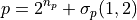
Plumial Implementation:
p = P(21)
sigma = p.uv() # Returns: u + v**2
n_p = p.n() # Returns: 4
# Verify reconstruction identity
reconstructed = 2**n_p + sigma.subs({S.u: 1, S.v: 2})
print(reconstructed) # Returns: 21 (original p-value)
Note
Mystery of the Animation: The hypnotic visualization above shows something quite remarkable - a “glitched” Collatz cycle that shouldn’t exist according to the standard conjecture. The p-value 281 was chosen for a very cheeky reason… The full revelation of what you’re seeing, including the complete cycle enumeration and the mathematical beauty of complex roots of unity, awaits in Chapter 6: Advanced Topics.
Chapter 3: The k Polynomial Transformation
From u,v to g,h: The k Polynomial
The k polynomial is derived through the transformation u → g·h, v → h:
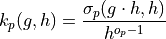
This transformation:
Preserves Bijection: One-to-one correspondence between p-values and k polynomials
Reversible Transformation: σp can be recovered from kp by suitable arguments and scaling
Natural Encoding: kp(g,h) provides the natural cycle encoding (gk+d, x/h)
Collatz Connection: For g=3, h=2, this becomes the standard Collatz system
Cyclic Structure: Integer evaluations encode the complete p-cycle structure
Relationship:
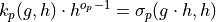
Reverse Transformation:
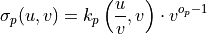
Plumial Implementation:
p = P(133)
sigma = p.uv() # Original sigma polynomial
k_poly = p.k() # k polynomial
# Forward transformation: sigma -> k
print(k_poly) # Derived from sigma
# Reverse transformation: k -> sigma (using relationship)
# sigma_p(u,v) = k_p(u/v, v) * v^(o_p-1)
from plumial.utils import S, TRANSFORM_GH_TO_UV
recovered_sigma = k_poly.subs(TRANSFORM_GH_TO_UV) * S.v**(p.o()-1)
print(recovered_sigma.expand() == sigma.expand()) # True
# The transformation constants capture the substitutions:
# TRANSFORM_UV_TO_GH = {u: g*h, v: h} # Forward: sigma -> k
# TRANSFORM_GH_TO_UV = {g: u/v, h: v} # Reverse: k -> sigma
Chapter 4: The Fundamental Identity
The d Polynomial and Cycle Constraints
Cycle analysis reveals the fundamental constraint:
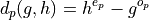
This d polynomial captures the algebraic essence of cycle behavior and maintains the bijection property: there’s a one-to-one correspondence between p-values and d polynomials.
The Cycle Element Identity
The central relationship governing all cycles:
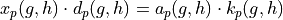
where:
xp(g,h): Encoding of p into the (gx+a, x/h) system
ap(g,h): Amplitude factor - the value required to scale kp so that ap · kp is divisible by dp
kp(g,h): k polynomial for p-value
dp(g,h): d polynomial for p-value
Mathematical Significance: This identity:
Connects individual cycle elements through polynomial relationships
Provides necessary conditions for cycle existence
Enables systematic cycle classification
Plumial Implementation:
p = P(133)
d_poly = p.d() # h**5 - g**2
k_poly = p.k() # Symbolic k polynomial
a_poly, x_poly = p.ax() # Factor the relationship
# Verify the identity: x·d = a·k
left = x_poly * d_poly
right = a_poly * k_poly
# left == right (symbolically)
Chapter 5: Cycle Theory
Natural and Reduced Cycles
For any cycle, the identity x·d = a·k has two fundamental encodings:
Natural Cycle: (gk+d, x/h) encoding - always exists for every natural number in any (g,h) system
Reduced Cycle: (gx+a, x/h) encoding - exists only when gcd(k,d) > 1
The cycle theory provides:
Universal Encoding: Every natural number has a natural cycle encoding in every (g,h) system
Conditional Reduction: Only some (g,h) systems admit reduced cycle encodings
Factor Dependence: Reduced cycles exist when k and d share integer factors in the particular (g,h) encoding
Cycle Factorization
If fp = gcd(kp, dp), then:
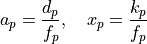
This factorization:
Natural Cycle: Uses (gk+d, x/h) encoding with kp and dp
Reduced Cycle: Uses (gx+a, x/h) encoding with factored xp and ap
Collatz Connection: The core Collatz problem asks whether any p exists such that dp divides kp in the (3x+1, x/2) system
Plumial Implementation:
p = P(133)
# Natural cycle encoding: (gk+d, x/h)
k_poly = p.k() # k polynomial for natural encoding
d_poly = p.d() # d polynomial for natural encoding
# Reduced cycle encoding: (gx+a, x/h) - only if gcd(k,d) > 1
f_poly = p.f() # GCD factor: gcd(k,d)
if f_poly != 1: # Reduced encoding exists
a_poly = p.a() # a = d/f for reduced encoding
x_poly = p.x() # x = k/f for reduced encoding
# Verify fundamental identity: x·d = a·k
print(a_poly * k_poly) # Should equal x_poly * d_poly
Chapter 6: Advanced Topics
Cyclotomic Connections
The d polynomial has deep connections to cyclotomic polynomials:
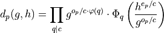
where:
c = gcd(e:sub:`p`**, o**:sub:`p`**)**: Common divisor of bit counts
Φq**(x)**: qth cyclotomic polynomial
φ(q): Euler totient function
This factorization reveals connections to:
Algebraic number theory
Root systems and Galois theory
Advanced polynomial factorization
Forced vs Unforced Cycles
A critical distinction for Collatz analysis:
Unforced Cycles: Next operation determined by xp-value LSB Forced Cycles: Next operation determined by p-value bit pattern
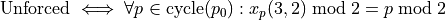
Binary Characterization: Forced cycles arise if and only if there are adjacent 1’s in the binary representation of the p-value. This includes both standard adjacency within the path bits and the special case of adjacency between the highest and lowest path bits (wraparound adjacency in the cyclic ur-cycle structure).
Mathematical Significance: Any counterexample to Collatz would be unforced.
Plumial Implementation:
P(9).isforced() # False (unforced)
P(291).isforced() # True (forced)
# Unforced condition check for cycle(9)
p9 = P(9)
all(p.x(3,2) % 2 == p.p() % 2 for p in p9.cycle()) # True
The Glitched Collatz Cycle: Revealing the Animation
The Mystery Revealed: Remember the hypnotic animation from Chapter 2? The p-value 281 was chosen for a deliciously cheeky reason - it represents a glitched Collatz cycle that challenges our understanding of the 3x+1 conjecture.
Now you know what you’re really seeing: σ281(u,v) = u² + uv² + v⁴ evaluated with complex roots of unity.
The Complete Cycle: Here is the full enumeration of cycle(281):
P(281) glitched Collatz cycle:
1. 281 = 100011001 (n=8, o=3, e=5)
2. 396 = 110001100
3. 326 = 101000110
4. 291 = 100100011
5. 401 = 110010001
6. 456 = 111001000
7. 356 = 101100100
8. 306 = 100110010
Why “Glitched”: This 8-element cycle exists in the (3x+1, x/2) system, yet according to the standard Collatz conjecture, all positive integers should eventually reach the trivial cycle 1→4→2→1. The apparent paradox is explained by the fact that p=281 is an example of a forced cycle, something not permitted by the standard framing of the Collatz conjecture. Forced cycles arise if and only if there are adjacent 1’s in the binary representation of the p-value, considering both standard adjacency and the special case of adjacency between the high and low path bits (wraparound adjacency in the cyclic structure).
The Animation Technique: The mesmerizing visualization results from:
Complex Roots of Unity: For p=281 with op = 3 and np = 8, we substitute:
u = e^(2πit/3) = cos(2πt/3) + i·sin(2πt/3) [3rd roots of unity]
v = e^(2πis/8) = cos(πs/4) + i·sin(πs/4) [8th roots of unity]
where t and s are interpolated smoothly from 0 to their respective periods.
Polynomial Evaluation: Computing σ281\(u,v) = u² + uv² + v⁴ in the complex plane
Smooth Interpolation: Creating continuous transitions as t ∈ [0,3) and s ∈ [0,8) cycle
Geometric Patterns: Each term (u², uv², v⁴) traces its own trajectory, and their sum creates the final hypnotic pattern
Mathematical Beauty: The animation reveals how discrete binary patterns (the cycle’s bit structures) transform into continuous geometric flows when viewed through the lens of complex analysis. Each point’s trajectory reflects the polynomial’s mathematical relationships, creating predictable yet hypnotic patterns.
Verification in Plumial:
# Explore the glitched cycle
p281 = P(281)
cycle = list(p281.cycle())
print(f"Cycle length: {len(cycle)}")
print(f"Sigma polynomial: {p281.uv()}") # u**2 + u*v**2 + v**4
# Verify it's truly a cycle in (3,2) system
for p in cycle:
print(f"{p.p():3d}: forced={p.isforced()}")
Chapter 7: Implementation in Plumial
Design Philosophy
Plumial implements this mathematical framework through:
Path Objects (P): Hydrated p-values with polynomial methods
D Objects: Direct access to d polynomial operations
Symbolic Integration: Full SymPy compatibility for mathematical exploration
Functional Interface: Elegant operations through F namespace
Code Architecture
The library structure mirrors the mathematical hierarchy:
# Foundation: Path objects encode p-values
p = P(133) # or P('10000101') from binary string
# Layer 1: Binary analysis
p.n(), p.o(), p.e(), p.b()
# Layer 2: u,v polynomials
p.uv()
# Layer 3: k polynomials
p.k(), p.encode(B.Collatz).k()
# Layer 4: d polynomials and identities
p.d(), p.ax(), p.f()
# Layer 5: p-cycle analysis
p.cycle(), p.isforced()
Mathematical Validation
Every implementation preserves the theoretical relationships:
import sympy as sy
p = P(133)
# Verify fundamental identity
a, x = p.ax()
assert sy.expand(x * p.d()) == sy.expand(a * p.k())
# Verify UV→GH transformation
uv = p.uv()
gh = uv.subs({S.u: S.g*S.h, S.v: S.h})
k_derived = (gh / S.h**(p.o()-1)).simplify()
assert k_derived == p.k()
Conclusion: Mathematical Power Through Abstraction
The polynomial framework transforms Collatz analysis from:
Computational: Iterating sequences → Algebraic: Solving polynomial equations
Case-by-case: Individual trajectories → Systematic: Polynomial families
Numerical: Specific values → Symbolic: General relationships
Elementary: Arithmetic operations → Advanced: Cyclotomic theory
This abstraction reveals deep mathematical structures while maintaining computational accessibility through Plumial’s clean API. The result is a powerful framework for systematic Collatz analysis that connects elementary number theory to advanced algebraic geometry. The core insight is that the Collatz conjecture reduces to asking whether any p-value exists such that dp divides kp in the (3x+1, x/2) system - a question that can now be approached through rigorous polynomial analysis.
Further Reading:
Paper 14: “Exploring Cyclic Structures in Polynomial Rings with Applications to the Collatz Conjecture”
Plumial Examples Notebook: Interactive demonstrations of all concepts
API Reference: Complete documentation of polynomial methods and transformations
The mathematical foundations presented here provide the theoretical basis for all Plumial operations, ensuring that computational exploration is grounded in rigorous mathematical theory.